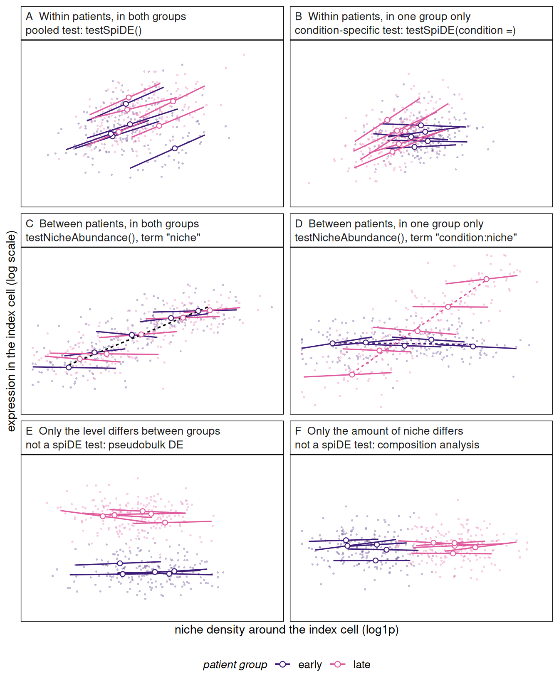

testSpiDE(). C and D: an association between patients, tested by testNicheAbundance(). E and F: effects of the condition that no spiDE test looks at.Dharmesh D. Bhuva
In this article we explain what spiDE computes and why, one step at a time. We start each step in plain language and then give the formula, followed by what the formula says in words, so the text can be read with or without the maths. It holds all the statistics of the package, from the model of a single gene to the tests of gene sets and of niche abundance. How to run the functions is in vignette("spiDE"), how well the tests hold up on real and simulated data is in vignette("spiDE-calibration"), and how many patients and cells a study needs is in vignette("spiDE-design").
Take one cell type, the index type (say, tumour cells), and a second cell type, the niche type (say, fibroblasts). spiDE asks whether a gene’s expression in the index cells changes with the number of niche cells around them.
One gene, one index type and one niche type make a triplet. spiDE tests every triplet.
Both questions are about patients, not cells. The condition belongs to a patient, and so does the way a patient’s tissue responds to its neighbourhood. spiDE therefore treats the patient as the unit of replication. A result is strong when patients agree, not when a patient contributes many cells. Treating cells as replicates would make every result look more certain the more cells were measured, even if patients disagreed.
A gene’s expression in the index cells can be tied to a niche type in more than one way, and a condition can change each of them. Each of spiDE’s tests is built for one kind of effect, and two common effects of a condition are left to other tools. The first thing to separate is the scale of the comparison:
Each of the two can be the same in both groups of patients or differ between them. The figure below draws every case on mock data, together with two effects of a condition that spiDE does not test.

testSpiDE(). C and D: an association between patients, tested by testNicheAbundance(). E and F: effects of the condition that no spiDE test looks at.testSpiDE() teststestSpiDE(), then results(res, test = "pooled")). A call means: in the same tissue, index cells with more of this niche type around them express more (or less) of the gene, consistently across patients.testSpiDE(condition = ), then results(res, test = "condition")), as the difference in average slope, second level minus first. A call means: the index cells’ response to each extra unit of niche density differs between the groups.By default the condition-specific test is run only among triplets that pass one of two filters (see “Multiple testing”): the pooled test, or a test that the slopes vary between patients more than their sampling noise allows. A slope present in one group only, or stronger in one group, has a non-zero average and can pass the first. All three patterns make the slopes vary between patients and can pass the second, including a slope that reverses between the groups and averages out close to zero. To spiDE 0.99.36 only the first filter was used (procedure = "filtered"), so a reversing slope was unlikely to reach the condition-specific test.
A within-patient slope is not always a response of the index cells. Transcripts of neighbouring niche cells can be assigned to index cells when cells are segmented, and they too rise with the niche’s density. plotSpillover() (see vignette("spiDE")) shows whether the calls are the niche type’s own markers.
testNicheAbundance() testsspiDE’s model gives each patient its own baseline level of every gene (the patient intercepts of Step 2). Everything that differs between patients as a whole is set aside before the slopes are estimated, including a real association: patients whose index cells sit among more of the niche type may express the gene differently overall. testNicheAbundance() asks that question separately, on one pseudobulk profile per patient and index type, against the patient’s mean niche density.
"niche" of testNicheAbundance() detects it: across all patients without a condition, averaged over the two groups with one. A call means: patients whose index cells sit among more of this niche type have more (or less) of the gene in those cells."condition:niche" of testNicheAbundance(condition = ) detects it, as the difference between the groups, second level minus first.These are statements about patients, not about cells responding to their neighbours. Patients with more of a niche type differ in many other ways too: in their overall composition, in sample quality, or in signal spilling between cells across the whole section. A between-patient association cannot be pinned on the niche, which is why spiDE’s own tests work within patients. Report each result as what it is, and never a result of one test as a result of the other.
Two effects of a condition are absorbed by the patients’ own levels, and no spiDE test looks at them:
limma or edgeR.sccomp or speckle for cell-type proportions.This matters most for a condition such as disease progression, which changes tissue in many ways at once. Most of those changes are differences between patients: late-stage tissue has more of some cell types and less of others (F), and its cells express some genes more or less (E), often both together and often in cell types that interact. Neither is a change in how cells respond to their neighbours, and the condition-specific test sees neither. It sees only a changed response per unit of neighbour density (B): within late-stage tissue, index cells with more niche cells around them differ from index cells with fewer by more, by less or in the opposite direction than within early-stage tissue. A changed interaction between two cell types reaches this test only when it changes that response. “Late-stage tumours have more fibroblasts, and their tumour cells express more of a gene” is F and E, not B, even when both happen in the same patients.
Reduced to one niche type, with each patient’s niche densities centred at their mean, the model of Step 2 reads, for gene \(g\) in index cell \(i\) of patient \(s\):
\[ \log \mathrm{E}[y_{gi}] \;=\; a_{gs} \;+\; \beta_{gs}\,(\ell_i - \bar\ell_s), \]
where \(\ell_i\) is the cell’s niche density on the log1p scale, \(\bar\ell_s\) the mean of \(\ell_i\) over the patient’s index cells, \(\beta_{gs}\) the patient’s within-patient slope and \(a_{gs}\) its level at its own mean density. With \(c_s\) the patient’s group, each effect is a statement about how these quantities vary across patients:
| Effect | In the model | Detected by | A call means |
|---|---|---|---|
| A. slope in every patient | the average \(\beta_{gs}\) is not 0 | testSpiDE(), pooled test |
within a patient, index cells with more of the niche around them express more (or less) of the gene |
| B. slope differs between groups | the average \(\beta_{gs}\) differs with \(c_s\) | testSpiDE(condition = ), condition-specific test |
that within-patient response differs between the groups |
| C. patients with more niche differ | \(a_{gs}\) changes with \(\bar\ell_s\) | testNicheAbundance(), term "niche" |
patients whose index cells sit among more of the niche differ in the gene’s level |
| D. that association differs between groups | the change of \(a_{gs}\) with \(\bar\ell_s\) differs with \(c_s\) | testNicheAbundance(condition = ), term "condition:niche" |
the between-patient association differs between the groups |
| E. level differs between groups | \(a_{gs}\) differs with \(c_s\) | not spiDE: pseudobulk differential expression | the gene’s overall level differs between the groups |
| F. amount of niche differs between groups | \(\bar\ell_s\) differs with \(c_s\) | not spiDE: composition analysis | the groups differ in how much of the niche surrounds their index cells |
spiDE’s tests read only the \(\beta_{gs}\). The intercepts \(a_{gs}\) absorb C to E, and F changes only where along the density axis each patient’s slope is measured.
Gene sets can be tested for the first four effects: A and B with spiGSEA(), C and D with testNicheAbundance(genesets = ).
For every cell, buildNiches() measures how many cells of each type surround it. It places a Gaussian bump of width \(\sigma\) (the bandwidth, in the units of the spatial coordinates) on every cell of a type and adds them up, which gives a smooth density of that type at every point of the tissue. The density of type \(n\) around cell \(i\) is \(d_{in}\).
spiDE uses \(\ell_{in} = \log(1 + d_{in})\), which compresses very dense neighbourhoods so that a few crowded areas do not dominate.
The bandwidth sets what “nearby” means: a small \(\sigma\) looks at immediate neighbours, a larger one at the surrounding tissue. Fit one bandwidth at a time.
Each index type is analysed separately. Within it, each gene’s counts are modelled by a negative binomial regression, the standard model for sequencing counts. Its mean can depend on covariates and its variance allows for more spread than pure sampling noise. For gene \(g\) in cell \(i\) of patient \(s(i)\):
\[ \log \mathrm{E}[y_{gi}] \;=\; \underbrace{a_{g,s(i)}}_{\text{patient's own level}} \;+\; \underbrace{\gamma_g^\top z_i}_{\text{cell covariates}} \;+\; \underbrace{\textstyle\sum_{n} \beta_{gn}\, \ell_{in}}_{\text{niche slopes}} \]
depth = "loglib"; see the options below). Other cell-level measurements, such as cell area, are added with covariates.niche are tested. An index type is never tested against its own niche, including any mergeNiches() group it belongs to.The fit uses SpaNorm::polishNB(), which fits each gene on its own. The patient intercepts are handled algebraically, so a fit with many patients costs about the same as one with few. Genes are independent given an index type, so they can be fitted in parallel.
Depth options. depth = "loglib" (the default) uses one slope on the log library size. "nonlinear" lets the effect of depth bend (a spline with three degrees of freedom). "spatial_spline" lets it vary smoothly across each section. "none" leaves depth out, for use with offset, a precomputed log-scale offset per gene and cell. Library size mixes technical capture with biological RNA content, so adjusting for it also removes any part of the niche effect that works through a cell’s total RNA. A slope is then expression relative to the cell’s total.
The regression above gives one pooled slope per gene and niche. The slopes engine, the default, then asks what each patient’s own slope is.
Refitting the model for every patient would be slow and unstable for patients with few cells. Instead, spiDE starts from the pooled fit and lets each patient’s own cells move the slope once toward what fits that patient best. This is a single step of the Newton-type algorithm (Fisher scoring) used to fit such models. With working weights \(w_i = \mu_i/(1 + \psi\mu_i)\) and residuals \(r_i = (y_i - \mu_i)/(1 + \psi\mu_i)\) at the pooled fit, and \(\tilde\ell_i\) the niche columns centred within the patient:
\[ \hat\beta_{gs} = \hat\beta_g + I_s^{-1} u_s, \qquad I_s = \sum_{i \in s} w_i \tilde\ell_i \tilde\ell_i^\top, \qquad u_s = \sum_{i \in s} \tilde\ell_i\, r_i . \]
\(u_s\) is how strongly the patient’s cells pull away from the pooled slope, and \(I_s\) is how much information they carry. A patient with many cells and a wide range of niche densities has a large \(I_s\) and a precise slope. A patient whose niche columns barely vary, or vary together, gives no usable slope for that gene and is left out of its test.
How precise is a patient’s slope? Two answers are computed.
tile, default \(3\sigma\)), the patient’s score is summed per tile, and the slope’s variance is computed from how much the tile sums vary: \(v^{\text{tile}} = \mathrm{diag}\big(I_s^{-1} (\sum_t U_t U_t^\top) I_s^{-1}\big)\, T/(T-1)\) over the \(T\) tiles, with \(U_t\) the score of tile \(t\). A patient with fewer than min.tiles tiles takes the model variance scaled by the typical ratio.The tile variance of a single gene is noisy, so spiDE summarises it as one inflation factor per patient and niche, shared by all genes: \(f_{sn} = \max\{1, \mathrm{median}_g(v^{\text{tile}}_{gsn}/v^{\text{model}}_{gsn})\}\). A patient’s slope variance is then \(v_{gs} = v^{\text{model}}_{gs} f_{sn}\).
Because the fit never sees the condition, any patient-level condition can be tested afterwards (testSpiDE(fit, condition = ...)). Retesting under a reshuffled condition reruns only the test, which makes permutation checks cheap.
Each gene now has one slope per patient, each with a variance. The tests combine them across patients.
How much patients disagree. Patients’ slopes differ for two reasons: each is estimated with noise (\(v_{gs}\)), and patients genuinely differ. The genuine spread is the between-patient variance \(\tau^2_g\), estimated from how much more the slopes scatter than their noise explains (the DerSimonian-Laird estimator of meta-analysis, computed without the condition).
Weights. Patient \(s\) is weighted by
\[ w_{gs} = \frac{1}{v_{gs} + \tau^2_g}. \]
A precise patient counts more, but never unboundedly more. When patients genuinely disagree (\(\tau^2_g\) large), every patient’s weight approaches the same value, because no single patient can speak for the rest.
Is the average slope zero? The weighted average of the patients’ slopes is tested with limma’s moderated \(t\)-test. The moderated test borrows information across genes to stabilise each gene’s variance, which helps when patients are few. Two refinements keep it honest:
eBayes(trend = TRUE, robust = TRUE) on the gene’s log mean expression).Does the average slope differ between the two groups? The patients’ slopes are regressed on the condition, with the same weights \(w_{gs}\):
\[ \hat\beta_{gs} = b_0 + \Delta_g\, c_s + [\text{strata}] + \text{error}, \]
where \(c_s\) is 1 for the second condition and 0 for the first. The estimate \(\hat\Delta_g\) is the difference in average slope, second level minus first.
Its standard error does not assume the weights are exactly right. It is a robust (HC2 sandwich) standard error, computed from how far each patient’s slope actually sits from its group’s fit, with small-sample Bell-McCaffrey degrees of freedom. This matters when some patients’ slopes are noisier than their weights suggest. A marker gene that is patchy within the index type is an example: its slope can swing with where the patches fall. Such a patient widens the interval rather than producing a call.
The weights come from the gene-shared variances \(v_{gs}\) and never from a gene’s own tile variance. A gene’s own tile variance, computed at the pooled fit, grows when a patient’s slope sits far from the pooled slope. Weighting by it would down-weight exactly the patients that differ most and shrink the estimated difference toward zero.
strata (a patient-level slide or batch column) adds one term per stratum to the condition model. Use it when the condition is partly confounded with slide, so that slide differences in slope are not read as condition differences. A condition entirely confounded with the strata cannot be tested and is refused.
spiDE tests many triplets, so it controls the false discovery rate (the expected share of false calls among the calls) with the Benjamini-Hochberg procedure. testSpiDE() reports a \(q\)-value per row:
q = NA.
procedure = "pooled_or_heterogeneity" (the default for the slopes engine): the triplets that pass either of the next two filters.procedure = "heterogeneity": the triplets whose slopes vary between patients more than their sampling variances allow. The statistic is Cochran’s \(Q_g = \sum_s (\hat\beta_{gs} - \bar\beta_g)^2 / v_{gs}\), the same one behind \(\tau^2_g\), referred to \(\chi^2_{m-1}\). Its \(p\)-value is reported as p.heterogeneity and filtered by Benjamini-Hochberg over every triplet at fdr. A difference between the conditions is such variation, so the correction is spent where there is something for the condition to explain, including a slope that reverses between the groups. With few patients this filter carries the condition test.procedure = "filtered" (the default to spiDE 0.99.36, and the sandwich engine’s): the triplets whose pooled test passes at fdr. With few patients the pooled test passes few triplets, and a reversing slope rarely passes it. It keeps a modest difference on a strong pooled slope, which \(Q_g\), spread over \(m - 1\) degrees of freedom, can miss.procedure = "all": every triplet.The estimate is on the natural-log scale per unit \(\log(1 + d)\). A pooled slope of 0.2 means expression rises by about 22% (\(e^{0.2}\)) for each unit increase in \(\log(1 + \text{density})\), in the same patient.
engine = "sandwich" takes a different route to the same question. It fits the regression of Step 2 once, with the condition’s interaction terms \(c_s \ell_{in}\) when given a condition, and tests the coefficients directly. Its standard error is a patient-clustered CR2 sandwich (Bell and McCaffrey 2002; Pustejovsky and Tipton 2018) with Bell-McCaffrey degrees of freedom: it lets patients differ without modelling how. It needs the condition at fit time. It is simpler but less powerful when effects vary between patients, and spiGSEA() needs the slopes engine.
A gene set is tested exactly like a gene, with spiGSEA(). In each patient, the set’s slope is the average of its genes’ slopes, each gene first divided by its typical spread between patients, \(\sqrt{\tau^2_g + \mathrm{median}_s v_{gs}}\), so that a highly expressed gene does not dominate.
The patients’ set slopes go through the same pooled and condition-specific tests as genes’ slopes. Because patients are the replicates, the correlation between genes of a set is already reflected in how much the set’s slope varies from patient to patient, and needs no separate estimate. \(q\)-values are given within each (index, niche, test) column and over every set tested (q.global).
The patient intercepts of Step 2 absorb one association on purpose. Patients whose index cells sit, on average, among more niche cells may express a gene differently as a whole. That is a comparison between patients, with as many data points as patients. It can reflect biology, differences in tissue composition, or signal spilling between neighbouring cells. testNicheAbundance() asks it directly, in two steps:
limma, adding the difference between conditions when a condition is given.Without a condition, the term "niche" is the association across all patients (effect C of What kinds of effects can spiDE find?). With a condition, "niche" is the association averaged over the two conditions, and the term "condition:niche" is its difference between them, second level minus first (effect D). The two terms are separate multiple-testing families.
With a few dozen patients, one patient at the edge of a niche type’s abundance can carry a whole between-patient slope; if a gene is also unusual in that patient, the slope looks far more certain than it is. So patients whose leverage in the regression exceeds max.leverage times the average are down-weighted until none does. The weights come from the patients’ niche densities and conditions only, never from expression, so no gene’s own values decide how much a patient counts. Each row reports the largest leverage before this cap and how many patients were down-weighted.
A result from this test says “patients with more of this niche differ”. A result from testSpiDE() says “within a patient, cells with more of this niche differ”. Report each as what it is.
With genesets, testNicheAbundance() tests gene sets the same way. Each gene is standardised across patients, and a set’s score in a patient is the mean of its genes’ standardised pseudobulk expression. With type = "competitive" (the default), the mean over the other genes is subtracted, as in spiGSEA(). The scores then go through the same regression as genes. This set version has not yet been checked against permutation nulls.
sessionInfo()
#> R version 4.6.1 (2026-06-24)
#> Platform: x86_64-pc-linux-gnu
#> Running under: Ubuntu 24.04.5 LTS
#>
#> Matrix products: default
#> BLAS: /usr/lib/x86_64-linux-gnu/openblas-pthread/libblas.so.3
#> LAPACK: /usr/lib/x86_64-linux-gnu/openblas-pthread/libopenblasp-r0.3.26.so; LAPACK version 3.12.0
#>
#> locale:
#> [1] LC_CTYPE=C.UTF-8 LC_NUMERIC=C LC_TIME=C.UTF-8
#> [4] LC_COLLATE=C.UTF-8 LC_MONETARY=C.UTF-8 LC_MESSAGES=C.UTF-8
#> [7] LC_PAPER=C.UTF-8 LC_NAME=C LC_ADDRESS=C
#> [10] LC_TELEPHONE=C LC_MEASUREMENT=C.UTF-8 LC_IDENTIFICATION=C
#>
#> time zone: UTC
#> tzcode source: system (glibc)
#>
#> attached base packages:
#> [1] stats graphics grDevices utils datasets methods base
#>
#> other attached packages:
#> [1] ggplot2_4.0.3 spiDE_0.99.37
#>
#> loaded via a namespace (and not attached):
#> [1] SummarizedExperiment_1.43.0 gtable_0.3.6
#> [3] rjson_0.2.23 xfun_0.62
#> [5] Biobase_2.73.2 lattice_0.22-9
#> [7] vctrs_0.7.3 tools_4.6.1
#> [9] generics_0.1.4 stats4_4.6.1
#> [11] parallel_4.6.1 tibble_3.3.1
#> [13] pkgconfig_2.0.3 Matrix_1.7-5
#> [15] RColorBrewer_1.1-3 S7_0.2.2
#> [17] S4Vectors_0.51.10 lifecycle_1.0.5
#> [19] SpaNorm_1.7.16 compiler_4.6.1
#> [21] farver_2.1.2 statmod_1.5.2
#> [23] Seqinfo_1.3.2 codetools_0.2-20
#> [25] htmltools_0.5.9 yaml_2.3.12
#> [27] pillar_1.11.1 BiocParallel_1.47.0
#> [29] SingleCellExperiment_1.35.2 DelayedArray_0.39.8
#> [31] limma_3.99.2 magick_2.9.1
#> [33] abind_1.4-8 nlme_3.1-169
#> [35] tidyselect_1.2.1 rsvd_1.0.6
#> [37] digest_0.6.39 BiocSingular_1.29.2
#> [39] dplyr_1.2.1 labeling_0.4.3
#> [41] splines_4.6.1 fastmap_1.2.0
#> [43] grid_4.6.1 cli_3.6.6
#> [45] SparseArray_1.13.4 magrittr_2.0.5
#> [47] S4Arrays_1.13.2 withr_3.0.3
#> [49] scales_1.4.0 rmarkdown_2.32
#> [51] XVector_0.53.0 matrixStats_1.5.0
#> [53] otel_0.2.0 ScaledMatrix_1.21.0
#> [55] SpatialExperiment_1.23.0 beachmat_2.29.3
#> [57] evaluate_1.0.5 knitr_1.52
#> [59] GenomicRanges_1.65.4 IRanges_2.47.5
#> [61] irlba_2.4.1 mgcv_1.9-4
#> [63] rlang_1.3.0 Rcpp_1.1.2
#> [65] glue_1.8.1 BiocGenerics_0.59.12
#> [67] jsonlite_2.0.0 R6_2.6.1
#> [69] MatrixGenerics_1.25.0